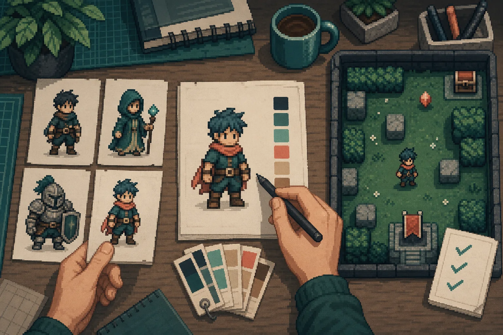

오늘의 도착점
프로젝트를 만들기 전에 수업의 방향과 공통 제작 환경을 맞춥니다.
- 게임 엔진의 역할을 입력, 규칙, 상태, 피드백의 관계로 설명할 수 있습니다.
- 16주 제작 경로와 최종 결과물의 범위를 이해합니다.
- AI 사용 원칙과 직접 설명하고 검증해야 하는 책임을 확인합니다.
- Unity Hub와 Unity 6.3 LTS를 설치하고 버전과 라이선스를 확인합니다.
180분의 흐름
수업 이해 60분 이후 Unity 설치를 시작하고, 다운로드 대기 시간에는 AI 정책을 함께 확인합니다.
수업을 이해합니다
- 출발점 확인
게임과 프로그래밍 경험, 관심 분야를 개별 기록합니다.
- 게임 엔진의 역할
게임, 엔진, Unity Editor의 차이를 핵심 구조로 구분합니다.
- 한 학기의 결과
16주 로드맵과 작고 완결된 2D 게임의 범위를 확인합니다.
- 수업 운영
매주 작업 방식, 과제 증거와 평가의 중심을 확인합니다.
설치를 준비합니다
- 휴식
설치에 사용할 계정과 기기 상태를 준비합니다.
- 설치 전 점검
운영체제, 저장 공간, 네트워크와 Unity ID를 확인합니다.
- Unity Hub 설치
공식 설치 파일로 Hub 안정 버전을 설치합니다.
- 로그인과 라이선스
Unity ID와 활성 라이선스를 확인합니다.
- Editor 선택
공지된 정확한 Unity 6.3 LTS와 최소 구성을 선택합니다.
설치를 완료합니다
- Editor 다운로드
다운로드를 진행하며 AI 허용 시기, 기록, 권리와 검증 책임을 확인합니다.
- 설치 검증
버전 번호와 설치 완료 상태를 확인하고 문제를 기록합니다.
- 종료 확인
체크리스트를 제출하고 다음 주 준비 사항을 확인합니다.
출발점 확인
경험의 차이는 성취도의 차이가 아닙니다. 설명의 속도와 실습 지원 방식을 정하기 위한 정보입니다.
나의 제작 경험
게임 엔진과 코딩이 모두 처음입니다.
예제나 튜토리얼을 따라 실행해 봤습니다.
Scene, 코드, 에셋을 일부 바꿔 봤습니다.
짧은 게임이나 인터랙션을 만든 경험이 있습니다.
- 자신의 경험 수준을 0-3 중 하나로 표시합니다.
- 사용해 본 제작 도구를 적습니다. 예: Photoshop, Blender, Unity, Unreal, Godot, Scratch.
- 이번 학기에 가장 만들고 싶은 상호작용을 한 문장으로 적습니다.
- 설치 과정에서 걱정되는 점 또는 현재 기기 문제를 한 가지 적습니다.
게임과 게임 엔진은 다릅니다
게임은 플레이어가 경험하는 규칙과 피드백의 체계입니다. 게임 엔진은 그 체계를 만들고 실행하는 공통 도구입니다.
게임
플레이어의 행동, 목표, 규칙, 상태 변화와 피드백이 연결된 경험입니다.
예: 이동한다 → 수집한다 → 점수가 오른다 → 목표를 달성한다게임 엔진
화면, 입력, 물리, 사운드, UI, 코드와 빌드를 한 프로젝트 안에서 연결하는 제작 환경입니다.
Unity는 엔진과 Editor, 패키지, 빌드 도구를 함께 제공합니다.게임은 작은 반복으로 작동합니다
키보드, 마우스, 터치, 게임패드
이동, 충돌, 점수, 시간, 성공과 실패
화면 변화, 애니메이션, UI, 소리
16주의 제작 경로
기초 구조를 직접 만든 뒤, 생성형 AI를 통제 가능한 제작 도구로 사용하고, 짧은 개인 게임을 완성합니다.
기초를 직접 만듭니다
Scene, GameObject, Component, C#, 입력, 2D 물리, Tilemap, 애니메이션, UI와 Audio를 연결합니다.
기초 이해를 확인합니다
중간고사를 통해 AI Agent 없이 Unity 구조와 핵심 기능을 이해했는지 확인합니다.
AI를 제한적으로 씁니다
Sprite와 사운드 후보, Ask, Plan, Agent, MCP와 CLI를 선택, 검토, 검증의 순서로 사용합니다.
개인 게임을 완성합니다
두 차례 면담과 플레이테스트를 거쳐 실행 build, project, 영상과 제작 기록을 제출합니다.
3-5분 안에 완결되는 2D 게임
큰 세계보다 작고 설명 가능한 시스템을 만듭니다. 하나의 핵심 행동이 시작, 플레이, 성공 또는 실패, 재시작으로 이어져야 합니다.
- 하나의 명확한 핵심 행동과 목표
- 작은 맵 또는 짧은 한 스테이지
- UI, 사운드, 애니메이션 피드백
- 플레이테스트와 수정 전후의 증거
- 설명할 수 있는 Scene과 Script 구조
- AI 사용 여부와 선택 근거 기록
수업은 이해, 제작, 확인으로 진행합니다
매주 새 기능을 많이 보는 것보다, 작은 기능을 직접 만들고 결과를 확인하는 리듬을 유지합니다.
새 개념, 게임 디자인 원리와 이번 주의 완료 기준을 확인합니다.
공통 예제를 완성한 뒤 값, 규칙, 화면 구성을 자신의 방식으로 수정합니다.
Console, Inspector, Play Mode, build 또는 화면 기록으로 완료 상태를 확인합니다.
한 학기의 주요 확인점
과제 1
Unity 기초 장면과 C# Script
과제 2
상호작용 가능한 1분 2D prototype
중간고사
세부 방식과 기준은 수업 진행 후 공지
과제 3
AI Sprite와 UI asset kit, 제작 로그
과제 4
Alpha build와 3인 플레이테스트 기록
기말 프로젝트
실행 build, project, 영상, 설명서와 AI 로그
Unity 6.3 LTS 설치
화면에 공지된 정확한 6000.3.x 패치 버전을 모든 학생이 동일하게 설치합니다.
설치 전 점검
하나라도 준비되지 않았다면 다운로드를 시작하기 전에 교수자에게 알립니다.
- 지원 운영체제Windows 10 21H1 이상 또는 Windows 11, macOS 12 이상
- 메모리Unity 공식 권장 최소 8GB RAM
- 저장 공간Editor를 설치할 로컬 디스크에 충분한 여유 공간
- 네트워크대용량 파일을 받을 수 있는 안정적인 연결
- 계정과 권한Unity ID 로그인과 앱 설치 권한
운영체제와 메모리 기준은 Unity 6 시스템 요구 사항 ↗과 Unity Hub 설치 안내 ↗를 기준으로 합니다.
설치 완료 상태0 / 6 완료
체크 상태는 이 브라우저에만 저장됩니다. 계정 정보나 기기 정보는 저장하지 않습니다.
-
Unity 다운로드 페이지 ↗에서 자신의 운영체제용 Hub를 내려받아 설치합니다. Windows는
.exe, macOS는.dmg설치 파일을 사용합니다.- 공식 Unity 도메인에서 받은 설치 파일인지 확인합니다.
- Beta 채널이 아닌 일반 안정 버전 Hub를 사용합니다.
- 방화벽 또는 파일 접근 권한 요청은 내용을 확인한 뒤 허용합니다.
-
Hub를 열고 브라우저 로그인 절차를 완료합니다. 계정이 없다면 개인이 계속 사용할 이메일로 Unity ID를 만듭니다.
- 공용 PC에서는 비밀번호 자동 저장을 선택하지 않습니다.
- 다른 학생의 계정이나 인증 코드를 공유하지 않습니다.
- Hub 우측 상단에서 자신의 계정으로 로그인됐는지 확인합니다.
-
Hub 왼쪽의
Licenses를 열어 활성 라이선스를 확인합니다. Unity Personal은 로그인하면 일반적으로 자동 활성화됩니다.라이선스가 보이지 않을 때Licenses → Add license → Get a free personal license를 선택하고 약관을 확인합니다. 학교에서 별도 seat를 제공한 경우에는 교수자의 안내를 따릅니다. -
Installs → Install Editor → Official releases에서 Unity 6.3 LTS를 찾고, 화면에 공지된 전체 버전 번호와 일치하는지 확인합니다.목록에 정확한 버전이 없을 때Unity download archive ↗에서 해당 버전의
Install링크를 눌러 Hub로 엽니다. 비슷한 버전을 대신 설치하지 않습니다. -
Editor 본체는 필수입니다. 플랫폼 Build Support, 언어 팩과 추가 개발 도구는 교수자가 별도로 지정하지 않았다면 오늘 설치하지 않아도 됩니다. 선택을 확인한 뒤
Install을 눌러 Editor 다운로드를 시작합니다.- 선택 모듈은 나중에
Installs → Manage → Add modules에서 추가할 수 있습니다. - 강의 화면과 메뉴 이름을 맞추기 위해 Editor 기본 언어는 영어 사용을 권장합니다.
- 모듈을 많이 선택해 설치 시간을 불필요하게 늘리지 않습니다.
- 선택 모듈은 나중에
다운로드를 기다리며 AI 사용 원칙을 확인합니다
Hub의 Downloads에서 진행 상태를 확인한 다음, 다운로드가 이어지는 동안 아래 내용을 함께 살펴봅니다.
AI 사용량은 점수가 아닙니다. 필요한 순간에 좁게 사용하고, 학생이 결과를 선택, 수정, 검증하고 설명해야 합니다.

| 구간 | 허용 범위 | 학생이 해야 할 일 |
|---|---|---|
| 1주차 | AI 도구 사용 없음 | 수업 정책을 확인하고 Unity 설치만 완료합니다. |
| 2-7주 | 개념 설명과 오류 해석을 위한 읽기 중심 질문 | 핵심 구조와 기능은 직접 만들고 설명합니다. Agent는 사용하지 않습니다. |
| 9-10주 | 아이디어와 Sprite, UI, Sound 후보 탐색 | 출처, prompt, 선택 이유와 직접 수정한 부분을 기록합니다. |
| 11-13주 | Ask → Plan → 제한된 Agent 또는 MCP | 변경 범위를 먼저 정하고 Console, Inspector와 Play Mode에서 검증합니다. |
| 14-16주 | 프로젝트 목적에 필요한 범위 | 핵심 Script와 Scene 구조, 생성 에셋의 권리와 선택을 구술 설명합니다. |
개인정보를 넣지 않습니다
이름, 연락처, 얼굴, 음성, 학생 명단과 평가 자료를 AI prompt나 reference로 업로드하지 않습니다.
권리를 먼저 확인합니다
직접 만든 자료 또는 AI 입력이 허용된 자료만 사용합니다. Asset Store 에셋을 외부 생성 AI에 업로드하지 않습니다.
비밀값을 저장하지 않습니다
API key, access token, 계정 정보는 Script, Scene, Prefab, 제작 로그와 저장소에 넣지 않습니다.
모든 결과를 검증합니다
AI가 만든 코드와 에셋은 오류 가능성이 있습니다. 작동과 권리를 확인하지 않은 결과는 제출물로 인정하지 않습니다.
-
Hub 상단의 Downloads에서 작업이
Completed인지 확인한 뒤,Installs카드에 표시된 전체 버전 번호를 공지 화면과 비교합니다.설치 완료 기준- Hub가 오류 없이 실행됩니다.
- 자신의 Unity ID로 로그인되어 있습니다.
Licenses에 활성 라이선스가 보입니다.Installs에 지정된6000.3.xf1이 보입니다.- Downloads에 진행 중이거나 실패한 항목이 없습니다.
설치가 멈췄을 때
반복해서 버튼을 누르기 전에 증상을 한 문장으로 기록하고 아래 순서대로 확인합니다.
Hub 설치 파일이 열리지 않습니다
운영체제 버전과 관리자 권한을 확인합니다. Windows는 64-bit Windows 10 21H1 이상, macOS는 12 이상이 Hub의 현재 지원 기준입니다. 보안 경고가 표시되면 파일 출처가 Unity 공식 도메인인지 먼저 확인합니다.
브라우저 로그인 후 Hub로 돌아오지 않습니다
Hub를 완전히 종료한 뒤 다시 열고 로그인합니다. 브라우저의 팝업 또는 외부 앱 열기 차단 여부를 확인하고, VPN이나 학교 네트워크의 인증 페이지가 연결을 막고 있는지도 확인합니다.
Unity Personal 라이선스가 보이지 않습니다
Licenses → Refresh를 먼저 선택합니다. 계속 보이지 않으면 Add license → Get a free personal license로 진행합니다. 학교 계정 seat를 사용하는 경우 개인 라이선스를 추가하지 말고 교수자에게 문의합니다.
Unity 6.3 LTS가 목록에 없습니다
Hub를 최신 안정 버전으로 업데이트한 뒤 다시 확인합니다. 그래도 없다면 공식 download archive ↗에서 공지된 정확한 버전의 Hub installation 링크를 사용합니다.
다운로드가 오래 멈춰 있습니다
Downloads 패널을 열어 어떤 항목에서 멈췄는지 확인합니다. 저장 공간과 네트워크 연결을 점검하고, 상대 경로 형식의 네트워크 드라이브나 심볼릭 링크를 설치 위치로 사용하지 않습니다.
설치가 오늘 안에 끝나지 않습니다
실패 지점, 표시된 오류 문구, 선택한 전체 버전을 기록합니다. 임의의 다른 버전을 설치하지 말고, 교수자 확인 후 다음 수업 전까지 지정 버전 설치를 완료합니다.
내 운영체제 / 설치하려는 전체 버전 / 멈춘 단계 / 화면의 정확한 오류 문구 / 이미 시도한 조치
“안 돼요”보다 “macOS 14, 6000.3.xf1 설치 63%에서 10분간 멈춤, Hub 재실행 후 동일”처럼 기록하면 해결이 빨라집니다.
종료 확인
오늘은 제작 결과물이 아니라 공통 환경과 수업 원칙을 맞추는 날입니다.
네 항목이 모두 확인되면 오늘의 실습을 완료했습니다.
입력, 규칙, 상태, 화면, 소리 중 자신의 문장에 필요한 말을 사용합니다.
설치 문제가 없다면 만들고 싶은 2D 상호작용을 한 문장으로 적습니다.
공식 자료
설치 화면이나 정책이 달라졌을 때에는 아래 Unity 공식 문서를 우선 확인합니다.
- Install the Unity Hub ↗Windows, macOS, Linux용 Hub 공식 설치 안내
- Download and install the Unity Editor ↗Hub에서 Editor 버전과 모듈을 설치하는 절차
- Managing licenses ↗Unity Personal, 학교 seat와 기타 라이선스 확인 방법
- Unity 6 release support ↗Unity 6.3 LTS 지원 기간과 릴리스 정책
- Unity download archive ↗Hub 목록에 없는 정확한 Editor 패치 버전 설치
- Unity 6 시스템 요구 사항 ↗운영체제, CPU, GPU와 메모리 권장 사양
- Unity AI tools ↗베타 기능, 접근 조건, 비용과 데이터 처리 안내
- Unity AI Guiding Principles ↗데이터, 모델, 생성 결과와 개발자 책임 원칙